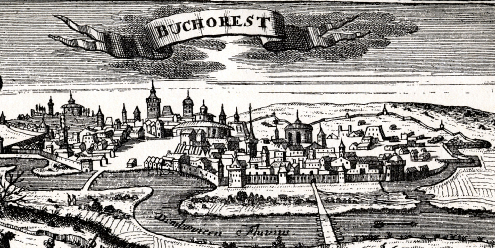

| Menu | BucharestBucharest is the capital and largest city of Romania, as well as its cultural, industrial, and financial centre. It is located in the southeast of the country, on the banks of the Dambovita River, less than 60 km (37.3 mi) north of the Danube River and the Bulgarian border. Bucharest was first mentioned in documents in 1459. It became the capital of Romania in 1862 and is the centre of Romanian media, culture, and art. Its architecture is a mix of historical (neo-classical), interbellum (Bauhaus and art deco), communist-era and modern. In the period between the two World Wars, the city's elegant architecture and the sophistication of its elite earned Bucharest the nickname of "Little Paris" (Micul Paris). Although buildings and districts in the historic city centre were heavily damaged or destroyed by war, earthquakes, and above all Nicolae Ceaușescu's program of systematization, many survived. In recent years, the city has been experiencing an economic and cultural boom. In 2016, the historical city centre was listed as "endangered" by the World Monuments Watch. |
| Culture | |
| Things to do | |
| Geography | |
| History | |
| Gallery | |
|  | |